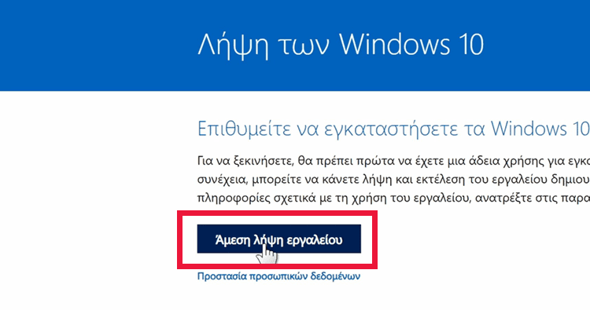
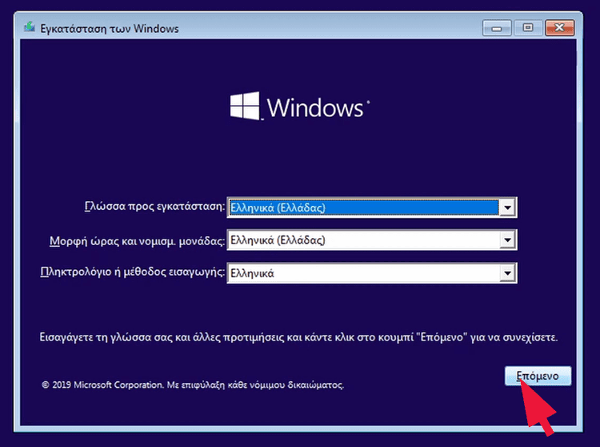

Πρώτο μας βήμα είναι να κατεβάσουμε τα Windows. Πηγαίνουμε λοιπόν στη σελίδα της Microsoft . Πατάμε "Άμεση λήψη εργαλείου"...
...και τρέχουμε το αρχείο που θα κατέβει. Είναι το MediaCreationTool.exe. To τρέχουμε ως διαχειριστές και ακολουθούμε τις οδηγίες του προγράμματος.
Έπειτα, θα πρέπει να επιλέξουμε αν θέλουμε να γράψουμε τα Windows απευθείας σε φλασάκι, ή αν προτιμάμε να κατεβάσουμε το ISO τοπικά στον υπολογιστή μας.Η διαφορά είναι ότι στη δεύτερη περίπτωση μπορούμε να χρησιμοποιήσουμε το ISO και για άλλες χρήσεις, πέρα από τη δημιουργία bootable USB. Ένα παράδειγμα είναι οι εικονικές μηχανές.
Αν μας ενδιαφέρει απλώς η εγκατάσταση Windows 10 στον νέο μας υπολογιστή, μπορούμε να επιλέξουμε απευθείας την εγγραφή σε φλασάκι.
Το μόνο που θα χρειαστούμε είναι κάποιο φλασάκι USB των 8GB και πάνω. Το συνδέουμε στον υπολογιστή μας και πατάμε "Επόμενο".
Προσοχή! Θα σβηστούν όλα τα δεδομένα που έχουμε μέσα στο φλασάκι. Σιγουρευόμαστε ότι δεν περιέχει δεδομένα που χρειαζόμαστε.
Επιλέγουμε, λοιπόν, απ’ τη λίστα το σωστό φλασάκι, και πατάμε ξανά "Επόμενο" για μία τελευταία φορά.
Τέλος, περιμένουμε να τελειώσει η εγκατάσταση.
Θα πάρει αρκετή ώρα μέχρι να κατέβουν τα Windows και να γραφτούν στο φλασάκι USB. Ωστόσο, μπορούμε παράλληλα να χρησιμοποιήσουμε τον υπολογιστή μας για άλλες εργασίες.
Με το φλασάκι έτοιμο, ξεκινάμε τη διαδικασία της εγκατάστασης. Πρώτα απ’ όλα, το συνδέουμε στον υπολογιστή που θέλουμε να κάνουμε εγκατάσταση Windows.
Στη συνέχεια, πατάμε το power button για να ανοίξει ο υπολογιστής.
Το πρώτο που θα πρέπει να διαλέξουμε είναι η γλώσσα. Ακόμα και να μην επιλέξουμε τώρα Ελληνικά, μπορούμε να το αλλάξουμε αργότερα. Πατάμε λοιπόν "Επόμενο".
Στη συνέχεια, κάνουμε κλικ στο "Εγκατάσταση τώρα".
Θα μας ζητήσει να εισάγουμε το κλειδί προϊόντος. Αν έχουμε κάποιο διαθέσιμο κλειδί, το βάζουμε στο πεδίο. Ειδάλλως, προχωράμε κανονικά την εγκατάσταση πατώντας στο "Δεν διαθέτω αριθμό-κλειδί προϊόντος".
Επιλέγουμε την έκδοση Windows που μας ενδιαφέρει να εγκαταστήσουμε. Συνήθως είναι τα Windows 10 Pro ή Home. Οι άλλες εκδόσεις είναι ειδικές περιπτώσεις. Πατάμε "Επόμενο".
Επιλέγουμε "Προσαρμοσμένη: Εγκατάσταση των Windows μόνο".
Θα εμφανιστεί μία λίστα με όλους τους διαθέσιμους δίσκους στο σύστημά μας. Αν έχουμε SSD, εγκαθιστάμε τα Windows εκεί. Από εδώ, μπορούμε επίσης να χωρίσουμε τον δίσκο σε διαμερίσματα, ανάλογα με τη χρήση μας.
Επιλέγουμε τον δίσκο που θέλουμε και πατάμε "Επόμενο".
Από εδώ και μπρος, η διαδικασία είναι αυτοματοποιημένη.
Θα περιμένουμε κάποια ώρα μέχρι να γίνει η εγκατάσταση, θα γίνει επανεκκίνηση, και στο τέλος θα χρειαστεί να κάνουμε κάποιες ρυθμίσεις. Ρυθμίστε το με βάση τις προτιμήσεις σας!